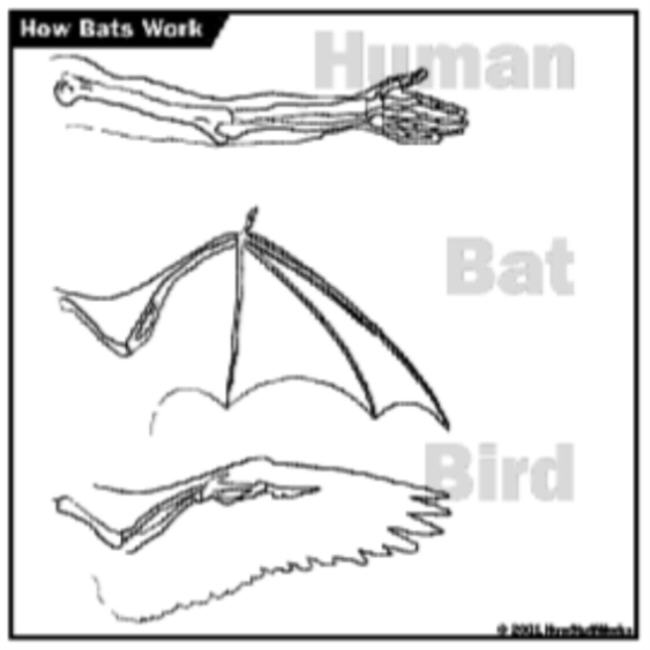

| email - June 2005 |
Despite its quantitative appearance, cladistics is a subjective measure.
Argumentative Alex writes to us regularly to critique our newsletter. Alex's last response was almost as long as our last newsletter, so we obviously can't print it all. There is one part that we want to share with you, however.
Last month, in response to Mike's questions, we talked about criteria for transitional forms, and referred back to a previous newsletter in which we suggested some criteria. In that newsletter, and at other times as well, we pointed out that a bat looks like a transitional form between a mammal and a bird, but clearly isn't. If evolutionists believed that mammals evolved into birds, or birds into mammals, then it would be the evolutionists' poster animal for transitional forms. But, since birds and mammals both supposedly evolved independently from reptiles, it isn't. A bat isn't a transitional form because it doesn't play well with the evolutionists' story.
Alex claims it isn't that way at all.
|
'Physical similarity is usually considered a criterion, but not always. Nobody considers a bat to be a transitional form between a mouse-like mammal and a bird, even though it looks a lot like one.' No-one considers it, not because they look the same but because the bone structure shows them to be completely different! As you can see from the picture below, birds fly with their 'arms', bats fly with their 'fingers'.  ... The main reason [evolutionists don't consider bats to be transitional] is that the biology (i.e. bone structure, physiology) of bats and birds are so unalike. Scientists use a process called 'cladistics' to assess the similarity (or otherwise) of organisms. This involves, amongst other things, comparisons of physiology (osteology, biochemistry, etc.) and molecular genetics, looking for similarities and differences to establish family relationships. Thus bats are more closely related to elephants (which they don't resemble) than to robins (which they do resemble, sort of). In biology, what things are is more important than what they look like. Cladistic analyses show that birds have a lot in common (structurally) with theropod dinosaurs and much less with mammals. The superficial shape is immaterial, or do you think that dolphins are fish? |
The phrase we want to emphasize is "Cladistic analyses show." Cladistic analyses are subjective, and can be used to show whatever one wants to show by arbitrarily deciding what criteria are more important than others. Consider the bat wing. If one says that shape is the most important criterion, then a bat wing is more like a bird wing than a human arm. If one says that function is the most important criterion, then (since bat wings and bird wings are used for flying, and human arms are used for grasping) a bat wing is more like a bird wing than a human arm. If one says that structure is the most important criterion, then (as Alex says) a bat wing is more like an elephant leg or a human arm than a bird wing.
But even if you say structure is the most important criterion, what is it about the structure of the bat wing that makes it more like a human arm than a bird wing? Presumably it is because the bat wing has a thumb and three fingers coming off a wrist-like joint, which is more like a human thumb and four fingers than the bones in the bird's wing. But there are two bones between the elbow and wrist in a human arm and a bird wing, and only one in a bat. If the number of bones between the elbow and wrist are most important, then a human arm is more like a bird wing than a bat wing.
How does one decide if the number of fingers or the number of forearm bones is the correct criteria to use? The answer, of course, is the criterion that gives the "right answer" (that is, the desired answer) is the right criterion.
This is an insidious form of circular reasoning because it even fools the person doing the analysis. Journals like Nature and Science often print several different cladograms showing relationships between living things. The article authors typically explain why the one they chose one is the "right" one by justifying their weighting scheme. It should not come as any surprise that "right" cladogram proves whatever relationship the authors wanted to show. The authors don't seem to realize that the cladogram is consistent with the conclusion because it was tweaked to be consistent with the conclusion.
Just because you use numbers doesn't make a decision unbiased. Perhaps you have heard baseball fans arguing about who is (or was) the greatest baseball player. There are lots of numbers one can use to evaluate baseball players. If you use the most home runs hit in a single season, one player will be declared to be the best. If you use most home runs hit in a career, another player might turn out to be the best. But why use home runs at all? Why not use batting average? Or batting average with runners in scoring position? Or runs batted in? Or slugging percentage? Or on-base percentage? A computer can compute any of these statistics for any player who has ever played in the major leagues, and even compute a "properly" weighted average of all these statistics to obtain one single figure of merit.
So why do people still argue about who is the best? Why has nobody ever devised a way to correctly weight all these statistics to determine who was the best player of all time? The answer is that one would have to keep fiddling with the weighting factors until the numbers "properly" rank the greatest players. The result would merely reflect the opinion of the person doing the fiddling, while giving the appearance of scientific objectivity.
(I am reminded of a time in 1966, when I was a senior in high school. I got all the girls and guys in my class to fill out data sheets, then used a computer program (which I wrote) to determine which girls were most compatible with which guys. The computer decided that I was most compatible with the prettiest girl in school!)
Cladistics is nothing more than fiddling with numbers until the "proper" answer is produced. Why should the wing structure be used to show that birds are more like dinosaurs than mammals? Why not use size, weight, number of vertebrae, or anything else? Because the wing gives the "right" answer, and other criteria give the "wrong" answer.
Alex's blindness to subjective definition is shown in the question, "... do you think that dolphins are fish?" Of course not, because a "fish" is currently defined to be a cold-blooded animal with gills. But that is just an arbitrary, human definition. There was a time, however, when dolphins were fish (at least as far as international fishing regulations went) because the law defined a fish be anything that lives in the water, including whales, dolphins, shrimp, and crabs.
What is the reason for categorizing dolphins and whales as mammals rather than fish? Evolutionists say that dolphins and whales should be classified as mammals because they evolved from a land-dwelling mammal. Why is speculative evolutionary origin more important than habitat? The answer, of course, is that after arbitrarily deciding that dolphins and whales are classified as mammals, evolutionists can use the classification as proof that dolphins and whales evolved from a land-dwelling mammal. Since the classification is based on the a priori assumption that dolphins and whales evolved from land-dwelling mammals, the conclusion is merely circular reasoning. It is not logically valid to classify whales and dolphins as mammals because they supposedly evolved from a land-dwelling mammal, and then use the fact that whales and dolphins are classified as mammals to prove they must have evolved from a land-dwelling mammal.
Alex will no doubt write back to us claiming that dolphins aren't classified as mammals because of their evolutionary heritage, but because they have mammary glands, and lungs, and who-knows-what other biological similarities to land-dwelling mammals. But why use mammary glands rather than dorsal fins (for example) as the classification criteria? No matter how evolutionists try to spin it, it really comes down to the fact that they want the classification system to reflect their supposed evolutionary scenario.
Classification methods simply institutionalize prejudices. Classification criteria are chosen on the basis of how well they produce the "right" answers. It is as if the rules of the game were chosen so that the "best" team wins. If the best team doesn't win, there must be something wrong with the rules of the game, so the rules are changed again and again until the best team wins all the time.
A good scientist asks, "Why?" You should ask why one criterion is used rather than another when classifying organisms. Would you get the same classification if different criteria were used? If not, why is one criterion more valid than another? When you ask these questions, we think you will find that the answer always has to do with evolution.
| Quick links to | |||
|---|---|---|---|
| Science Against Evolution Home Page |
Back issues of Disclosure (our newsletter) |
Web Site of the Month |
Topical Index |